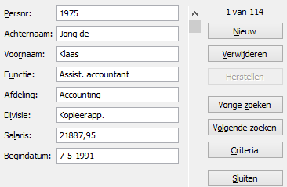
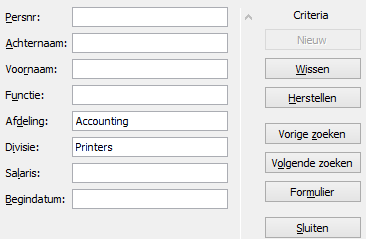

Taak: Zoeken met een formulier
Met behulp van een formulier zoeken naar records die aan bepaalde voorwaarden voldoen.
Om deze taak uit te kunnen voeren is het nodig dat de knop Formulier op de Werkbalk Snelle Toegang beschikbaar is. Wanneer deze knop niet zichtbaar is, dan moet deze eerst ingeschakeld worden.
- Open het hulpbestand.
- Selecteer een willekeurige cel in het gegevensgebied.
-
Klik op de knop Formulier.
Het gegevensformulier verschijnt.
Figuur 2. Gegevensformulier Personeel  -
Klik op Criteria.
Het formulier wordt leeg gemaakt en kan gebruikt worden om de zoekcriteria in te vullen.
-
Typ nu in bij Afdeling Accounting en bij Divisie
Printers.
Figuur 3. Formulier personeel met zoekcriteria  -
Klik op Volgende zoeken.
De gegevens van de eerste persoon die aan de criteria voldoet worden getoond.
- Blader met de knoppen Volgende zoeken en Vorige zoeken door de lijst. Er zijn in totaal 5 personen die aan de criteria voldoen.
Voorbeelden zoekcriteria
In de tabel hierna staan een aantal voorbeelden van zoekcriteria. Probeer deze uit en controleer of de gevonden records aan de criteria voldoen. Het is ook mogelijk om meerdere criteria te combineren. Maak steeds eerst de lijst met criteria leeg voordat je met een nieuwe oefening begint.
| Veld | Waarde | Toelichting |
|---|---|---|
| Achternaam | Ja | Zoekt naar personen waarvan de achternaam begint met
Ja. |
| Achternaam | *os | Zoekt naar personen waarvan in de achternaam osvoorkomt. |
| Salaris | >70000 | Zoekt naar personen met een salaris groter dan 70000. |
| Begindatum | <1-1-1990 | Zoekt naar personen met een begindatum voor 1-1-1990. |